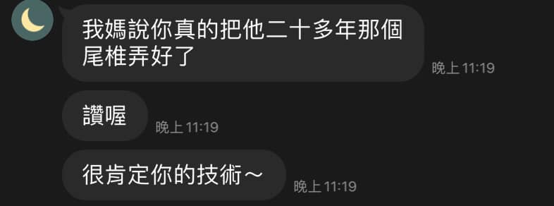

《傷寒論》原序：「上以療君親之疾，下以救貧賤之厄，中以保身長全，以養其生。」
《傷寒論》原序：「上以療君親之疾，下以救貧賤之厄，中以保身長全，以養其生。」
學醫，至始至終的初心就是將所學應用到自己的至親、好友，幫助這些所愛之人能減少被疼痛困擾的機會。
感謝老朋友的信任，把自己的媽媽交到我手上，很幸運也很開心，能解決這困擾多年的問題☺️
這些困擾多年的小疼小痛，雖不至於有生命危險，但日日疼痛也是非常煎熬的。每一種疼痛不適都應該被好好重視。
但人體之奧妙、醫學之複雜多變，身為醫者總是所知有限，謙卑地面對每一位求診者，盡全力去處變每種千變萬化的狀況，不可能全知全能，但只要能幫得上忙，甚是榮幸！
太初中醫診所
中醫師 黃彥鈞
